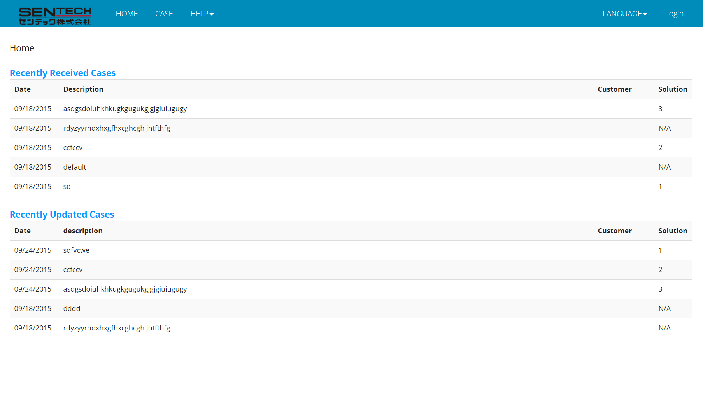

The Sentech inner page is intended to share information among Sentech Company and simplify the work of Sentech support team or maybe later Sentech sales team. The website pages are developing using ASP.NET(C#) along with JavaScript, JQuery and the DBMS system is Microsoft SQL Server. Also, the website is running on IIS (Internet Information Service) server. The main or default page without user log in is like this:
Initially, there are 4 tags in the navigation bar: HOME, SUPPORT, ABOUT, CONTACT. The ABOUT is just some information about this web page, CONTACT information is about the author. Besides these two, when user clicks the HOME or Sentech logo, it will go back to HOME page. When user clicks SUPPORT tag, the support page would show up with 5 recently received cases and 5 recently updated cases. In this way, even no one logged in; it is possible to glimpse the latest news in the support team. More contents could show up to user when he/she logs in. The log in page could be entered by click the log in link in the top right most corner.